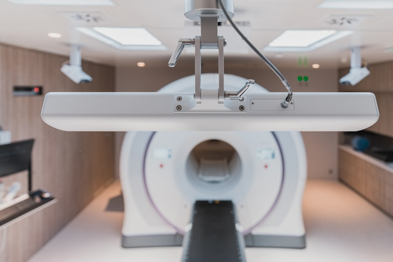
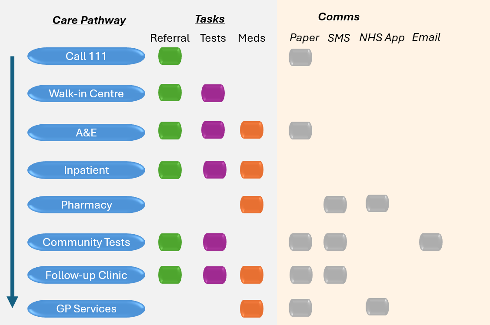
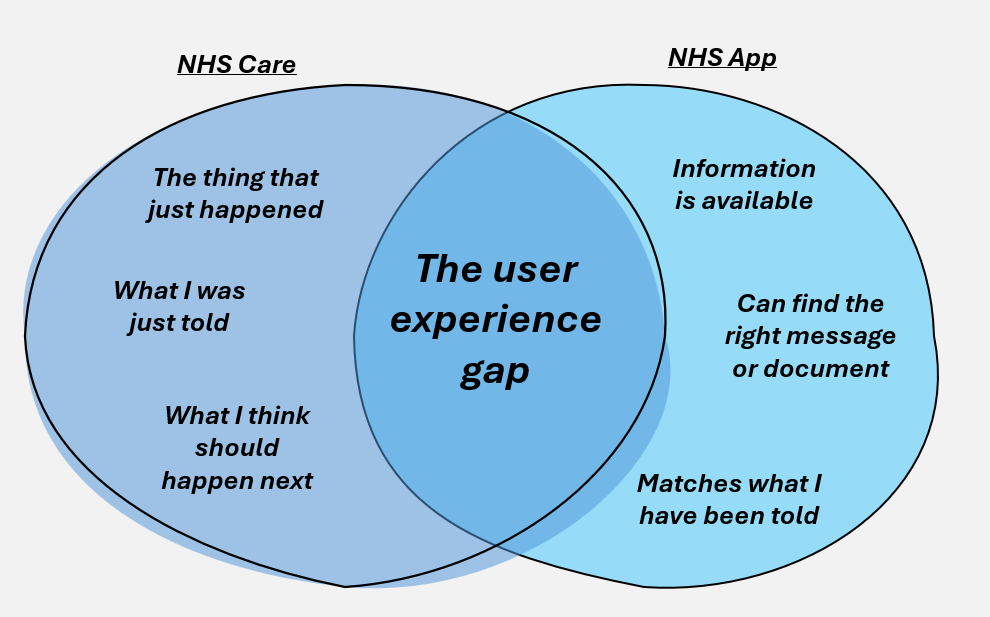

Monthnotes June
Trigger Warning: this post contains references to health testing and anxiety
A circle of curiosity

It was only last week, that I layed in the MRI scanner in hospital. Listening to Vernon Kay on Radio 2, wondering the big questions of life. Why me? How did I end up here? With some sickly irony, the radio piece was about things that make you itch and cause anxiety. Something, that someone inside and MRI scanner, already has full awareness of. A wry smile only, as I cannot move, I cannot panic. Sweaty palms. Breathing deeply. Chest pains. Maybe I’m ok, I’m not panicking yet. As a child we often played hide and seek, close your eyes and pretend you are hiding under the bed for an hour… no problem? But having to imagine being surrounded by midgeys and mosquitos, or being tickled, that really wasn’t part of the deal, Vernon. Emotional highs and lows, as the radio flows through Sam Fender, Hypersonic Missles and some MJ. As the minutes tick along, I have no sense of time. The MRI machine whirls and rages in the background, CLANK ZAP CLANK. BLEEP BUZZ BLEEP. An unknown, quiet, but reassuring male voice, chirps in amidst the chaos: breathe in, and breath out. HOLD. breathe in, and breath out. HOLD. breathe in, and breath out. HOLD. And relax.
Then nothing. Silence. Isolation. Trapped. Lonely. Confusion. Seconds go by… I stare at the array of tiny white painted dots on the scanner’s internal roof, just two centimetres from my face, my eyes going in and out of focus. Again I think: Why me? What am I here? And when will this end? Out of no where. A voice returns. This time, a pleasant female voice. Your doing well Thomas. We’re just going to repeat the test again. Breath in, breath out, HOLD. Breath in, breath out, HOLD. CLANK ZAP BUZZ. The machine goes in the background. Again the tasks repeat. The holds getting longer each time. I count 5 seconds. 10 seconds. 15 seconds. I don’t panic. This is easy work for me. As a keen swimmer, I know a fair bit about breathing. 8 second box breaths.I readily could swim a 25 metre length under water after a warmup. They aren’t going to see much change on the scanner with an 8-second breath hold while static. The radio comes back on, Ten to the Top. Oh what, it’s only 10.30. It feels like this has gone on for an eternity already.
Then the voice chimes in, we’re half way there. We need to bring you out and add the contrast dye. I’m shaken. The mechanical machine rattles as I slide out of the cocoon, into the colder room. I feel the liquid slide into my forearm. Ready Thomas? Struct for words, I nod. Again the machine whirls into life. Half way there, cramp is already setting into my legs. My attention switches to the radio, a classic love, happiness and cycle of life song, Travis - Flowers in the Window, comes on, what else could be more cheery, for a Monday morning, thanks Vernon. One solitary tear rolls out my left eye, onto my cheek and down my face. I do not blink. I cannot wipe it away. Trapped. My feet shiver and the seconds last for minutes and the minutes last for hours. I will not squeeze the panic alarm. I will not. Finally, that voice. “We are finished Thomas, bringing you out.”
As the machine returns me to the freezer room, I’m greeted with well dones. I see the clock on the wall. 11.05: really, it was only 1 hour? I bolt upright and off the bed tracks, in a hurry to escape this strange cold place. Blood shunting, causes dizziness as I rise. I stumble but catch myself. The doctors and nurses look disapprovingly, “you didn’t need to get up that fast”. Yes I’m outta here as quick as possible. I grab some biscuits for the suger and to settle leg and arm cramps. Greeted in the reception by my girlfriend. ‘All ok?’ what a wonderful feeling to hear the words of someone who cares for you. ‘Coffee shop?’ I guess mines a decaf and half a slice of cake till I get the all-clear.
Inbetween health and unhealth
While this is all still going, I’m yet to have the results back. I’m hoping for positive answers, but it is all very much unknown.
I’ve been very diligent, eating well, sleeping well, living the clean life (no booze, no protein shakes, no gym, no swimming, no running - walking and jogging only, super salads). Living out of spreadsheets, documenting whatever I’m doing, to understand, for me whether I feel I’m improving and also what else might be causing triggers/flare ups in my condition.
It has been a terrible time for my social life though; I haven’t been able to attend running club most weeks, and every time I attend the chat circles around: Tom are you better? Tom should you be running? I honestly don’t know, and I’ve had no advice (medically) about changing my lifestyle.
In an endless search for answers, I’ve joined all the online groups for my condition. It seems across countries, the treatment pathways, clinical advice, and pharmaceutical options are very different. It is highly frustrating and demoralising to hear about people whose problems have been going on for years with no resolution, whereas in some places newer drugs are helping chronic patients achieve full recovery. Everyone in the group is supportive of each other which is reassuring though.
Also there is widely differing views on whether lifestyle changes are necessary/required to avoid pericarditis becoming chronic. A lot of people are talking about reducing heart rate (under 100bpm), and limiting all types of exercise. However, for most people this is simply not achievable, with their busy lifestyles, work and other commitments. Then there is the risk of deconditionality and frailty, doing literally nothing while taking the prescribed medicine causes bone loss, muscle loss, dizziness and a whole other load of risks. So it seems, many struggle if you rest or if you don’t. All this aligns to the question, is this condition well understood medically? And are the pathways optimised to support full recovery, or to keep people chronically unwell but in reduced pain? I don’t know but I’m trying to understand more.
What about digital?
In between the many tests and checkups, it has become almost a second job chasing organisions for progress updates, and seeking clarity around their advice.
I struggled to document what has being gone on. As I’ve passed through every part of the healthcare system. Referrals leading to more referrals. Tests leading to more tests.

During this journey, I’ve received a pile of communications across all different channels. Text/SMS, email, NHS app, letters, telephone and verbal. However, at times there was no communication. Not knowing if your health is going backwards or forwards, or what is happening next, is a really terrible place for any patient to be left hanging.
There is a lot of excitement about the new and bold plans for more messaging in the NHS App. Reducing the cost of letters, yippee. But lets be blunt, the NHS App is not working well at all in secondary care and messaging particularly.
- Referrals I had don’t exist at all
- Tests I had, not visible, there are no results
- Tests I think I need aren’t shown or bookable
- Prescriptions I have are not shown or collectable
- Hospital notes appear as PDFs in the GP messaging
There is a gigantic user experience gulf in between what happens in the care pathway and what patients are told, compared to what limited information is available on the app, and how inaccessible it is. Moving between hospital providers, GP, testing and community services… transfer of care is also super clunky.
The app needs to help connect the dots and show the wider picture for patients.

The communications and messaging information architecture needs a total overhaul, centred around making patient journeys being easier to navigate and engage with across a whole treatment plan. Converting physical letters to PDF is neither inclusive nor a helpful solution if patients can’t find them (or annotate them), though for sure it saves some money.
In a world of endlessly bleeping computers… we researchers and designers need to regularly zoom out and ask… not what can we tweak or optimise… but knowing all these problems, if we started again what would a good solution and user experience actually look like?